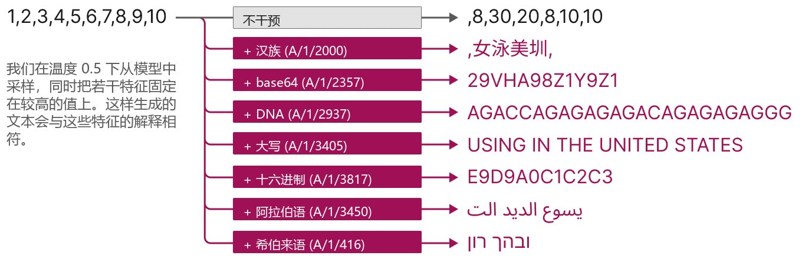

把语言模型分解成可理解的组件
📖 中文摘要
专业术语注解
特征：一组神经元激活的固定组合，可解释地对应某个概念字典学习：把神经活动分解为大量基本概念特征的机器学习方法神经元激活：神经元被输入触发而产生的响应强度数值可解释性：让人理解AI内部运作、知道它为何如此行为的属性Transformer：当前主流大语言模型采用的神经网络架构机制可解释性：从原理层面逆向解析模型内部工作机理的研究方向📄 中文全文
- 分类： 可解释性（Interpretability）
- 来源： https://www.anthropic.com/research/decomposing-language-models-into-understandable-components
可解释性研究（InterpretabilityResearch）
2023 年 10 月 5 日
神经网络是在数据上训练的，而不是被编程来遵循规则。在训练的每一步中，数百万或数十亿个参数都会被更新，以使模型更好地完成任务；到训练结束时，模型已能够展现出令人眼花缭乱的各种行为。我们完全理解训练后网络的数学原理——神经网络中的每个神经元都执行简单的算术运算——但我们不理解为什么这些数学运算会带来我们所看到的行为。这使得我们难以诊断失败模式、难以知道如何修复它们，也难以证明一个模型是真正安全的。
神经科学家在理解人类行为的生物学基础时也面临类似的问题。人脑中放电的神经元必须以某种方式实现人的思想、情感和决策。几十年的神经科学研究揭示了大脑运作的许多机制，并促成了针对癫痫等疾病的靶向治疗，但仍有许多奥秘尚未解开。幸运的是，对于我们这些试图理解人工神经网络的人来说，实验要容易做得多。我们可以同时记录网络中每个神经元的激活状态，通过抑制或刺激它们进行干预，并测试网络对任何可能输入的反应。
不幸的是，事实证明单个神经元与网络行为之间并不存在一致的关系。例如，小型语言模型中的单个神经元在许多不相关的语境中都会被激活，包括：学术引用、英语对话、HTTP 请求和韩语文本。在一个经典的视觉模型中，单个神经元会对猫的脸和汽车的前脸都作出反应。一个神经元的激活在不同语境中可能意味着不同的事物。
 在我们最新的论文《迈向单义性：用字典学习分解语言模型》中，我们概述了这样的证据：存在比单个神经元更好的分析单元，并且我们已经构建了能够在小规模 Transformer 模型中找到这些单元的机制。这些单元被称为特征（features），对应着神经元激活的模式（线性组合）。这为将复杂的神经网络分解成我们可以理解的部分提供了一条路径，并建立在神经科学、机器学习和统计学中解读高维系统的既往努力之上。
在我们最新的论文《迈向单义性：用字典学习分解语言模型》中，我们概述了这样的证据：存在比单个神经元更好的分析单元，并且我们已经构建了能够在小规模 Transformer 模型中找到这些单元的机制。这些单元被称为特征（features），对应着神经元激活的模式（线性组合）。这为将复杂的神经网络分解成我们可以理解的部分提供了一条路径，并建立在神经科学、机器学习和统计学中解读高维系统的既往努力之上。
在 Transformer 语言模型中，我们将一个包含 512 个神经元的层分解为 4000 多个特征，这些特征分别表征诸如 DNA 序列、法律语言、HTTP 请求、希伯来语文本、营养学表述等等更多内容。这些模型属性中的大多数在单独观察单个神经元的激活时是不可见的。
 为了验证我们找到的特征在可解释性上显著优于模型的神经元，我们请了一位盲测的人类评估员对它们的可解释性打分。特征（红色）的得分远高于神经元（青色）。
为了验证我们找到的特征在可解释性上显著优于模型的神经元，我们请了一位盲测的人类评估员对它们的可解释性打分。特征（红色）的得分远高于神经元（青色）。
 我们还采用了「自动可解释性」（autointerpretability）方法，即使用一个大语言模型为小模型的特征生成简短描述，然后根据另一个模型基于该描述预测特征激活的能力来打分。同样，特征的得分高于神经元，这提供了额外的证据，表明特征的激活及其对模型行为的下游影响具有一致的解释。
我们还采用了「自动可解释性」（autointerpretability）方法，即使用一个大语言模型为小模型的特征生成简短描述，然后根据另一个模型基于该描述预测特征激活的能力来打分。同样，特征的得分高于神经元，这提供了额外的证据，表明特征的激活及其对模型行为的下游影响具有一致的解释。
特征还提供了一种有针对性的模型引导方式。如下所示，人为激活某个特征会使模型行为以可预测的方式发生改变。

最后，我们拉远视角，从整体上审视特征集。我们发现，学习到的特征在不同模型之间很大程度上是通用的，因此通过研究一个模型中的特征所得的经验教训可能推广到其他模型。我们还实验了调整学习特征的数量。我们发现这提供了一个「旋钮」，用于调节观察模型的粒度：将模型分解为一小组特征可提供更易理解的粗略视图，而将其分解为一大组特征则能提供揭示微妙模型属性的更精细视图。这项工作源于 Anthropic 对机制可解释性（Mechanistic Interpretability）的投入——这是我们在 AI 安全方面最长期的研究押注之一。迄今为止，单个神经元不可解释这一事实对语言模型的机制理解构成了严重障碍。将神经元组分解为可解释的特征，有望跨越这一障碍。我们希望这最终能让我们从内部监控和引导模型行为，提升企业和全社会采用 AI 所必需的安全性与可靠性。
我们的下一个挑战是将这种方法从小型模型（我们已在其中验证了成功）扩展到前沿模型——后者的规模大出许多倍，且复杂程度大幅提高。我们第一次感到，解释大语言模型的下一个主要障碍是工程问题而非科学问题。
要了解更多相关信息，请阅读我们的论文《迈向单义性：用字典学习分解语言模型》。
相关内容
进一步了解 Claude 的数学能力
一个未公开发布的研究版 Claude 在与黎曼猜想（Riemann hypothesis）相关的问题上取得了进展。它改进了满足该猜想的黎曼 zeta 函数零点比例的长期下界，将其从 41.6% 提高到 67.2%。 了解更多
用 Claude 发现密码学弱点
密码算法。第一个攻击显著削弱了 HAWK——一种为未来量子计算机能够破解现有标准的世界而构建的数字签名方案。第二个攻击则发现了一种攻击轮数缩减版 AES（使用最广泛的对称密码）的新方法。 了解更多
Project Pilot：AI 能控制无人机吗？
我们与 Andon Labs 合作开发了一系列评估，用于评估 AI 模型使用飞行无人机的能力，最终形成了一个新的基准测试：Drone-Bench。 了解更多
▸ 英文原文（点击展开）
Decomposing Language Models Into Understandable Components
- Category: Interpretability
- Source: https://www.anthropic.com/research/decomposing-language-models-into-understandable-components
Decomposing Language Models Into Understandable Components
Oct 5, 2023
Neural networks are trained on data, not programmed to follow rules. With each step of training, millions or billions of parameters are updated to make the model better at tasks, and by the end, the model is capable of a dizzying array of behaviors. We understand the math of the trained network exactly – each neuron in a neural network performs simple arithmetic – but we don't understand why those mathematical operations result in the behaviors we see. This makes it hard to diagnose failure modes, hard to know how to fix them, and hard to certify that a model is truly safe.
Neuroscientists face a similar problem with understanding the biological basis for human behavior. The neurons firing in a person's brain must somehow implement their thoughts, feelings, and decision-making. Decades of neuroscience research has revealed a lot about how the brain works, and enabled targeted treatments for diseases such as epilepsy, but much remains mysterious. Luckily for those of us trying to understand artificial neural networks, experiments are much, much easier to run. We can simultaneously record the activation of every neuron in the network, intervene by silencing or stimulating them, and test the network's response to any possible input.
Unfortunately, it turns out that the individual neurons do not have consistent relationships to network behavior. For example, a single neuron in a small language model is active in many unrelated contexts, including: academic citations, English dialogue, HTTP requests, and Korean text. In a classic vision model, a single neuron responds to faces of cats and fronts of cars. The activation of one neuron can mean different things in different contexts.
In our latest paper, Towards Monosemanticity: Decomposing Language Models With Dictionary Learning, we outline evidence that there are better units of analysis than individual neurons, and we have built machinery that lets us find these units in small transformer models. These units, called features, correspond to patterns (linear combinations) of neuron activations. This provides a path to breaking down complex neural networks into parts we can understand, and builds on previous efforts to interpret high-dimensional systems in neuroscience, machine learning, and statistics.
In a transformer language model, we decompose a layer with 512 neurons into more than 4000 features which separately represent things like DNA sequences, legal language, HTTP requests, Hebrew text, nutrition statements, and much, much more. Most of these model properties are invisible when looking at the activations of individual neurons in isolation.
To validate that the features we find are significantly more interpretable than the model's neurons, we have a blinded human evaluator score their interpretability. The features (red) have much higher scores than the neurons (teal).
We additionally take an "autointerpretability" approach by using a large language model to generate short descriptions of the small model's features, which we score based on another model's ability to predict a feature's activations based on that description. Again, the features score higher than the neurons, providing additional evidence that the activations of features and their downstream effects on model behavior have a consistent interpretation.
Features also offer a targeted way to steer models. As shown below, artificially activating a feature causes the model behavior to change in predictable ways.
Finally, we zoom out and look at the feature set as a whole. We find that the features that are learned are largely universal between different models, so the lessons learned by studying the features in one model may generalize to others. We also experiment with tuning the number of features we learn. We find this provides a "knob" for varying the resolution at which we see the model: decomposing the model into a small set of features offers a coarse view that is easier to understand, and decomposing it into a large set of features offers a more refined view revealing subtle model properties.
This work is a result of Anthropic’s investment in Mechanistic Interpretability – one of our longest-term research bets on AI safety. Until now, the fact that individual neurons were uninterpretable presented a serious roadblock to a mechanistic understanding of language models. Decomposing groups of neurons into interpretable features has the potential to move past that roadblock. We hope this will eventually enable us to monitor and steer model behavior from the inside, improving the safety and reliability essential for enterprise and societal adoption.
Our next challenge is to scale this approach up from the small model we demonstrate success on to frontier models which are many times larger and substantially more complicated. For the first time, we feel that the next primary obstacle to interpreting large language models is engineering rather than science.
To learn more about all of this, read our paper, Towards Monosemanticity: Decomposing Language Models With Dictionary Learning.
Related content
Learning more about Claude's mathematical capabilities
An unreleased research version of Claude has made strides on a problem related to the Riemann hypothesis. It improved a longstanding lower bound for the fraction of zeros of the Riemann zeta function that satisfy the hypothesis, increasing it from 41.6% to 67.2%. Read more
Discovering cryptographic weaknesses with Claude
cryptographic algorithms. The first attack significantly weakens HAWK, a digital signature scheme that was built for a future world where quantum computers are able to break existing standards. The second identifies a new way to attack round-reduced AES, the most widely used symmetric cipher. Read more
Project Pilot: Can AI control a drone?
Working with Andon Labs, we’ve developed a new series of evaluations that assess AI models’ ability to use a flying drone, culminating in a new benchmark: Drone-Bench. Read more